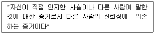

화재감식평가기사 (2013-09-28 기출문제)
1과목: 화재조사론
1. 다음 중 분진폭발의 위험이 가장 낮은 것은?
- 알루미늄
- 적린
- 황
- 생석회
(정답률: 90%)

2. 불기둥에 의해 수직벽면에 생성되는 패턴으로 옳지 않는 것은?
- V 패턴
- 모래시계 패턴
- 도넛형태 패턴
- U 패턴
(정답률: 88%)
3. 화재가 나타나는 V 패턴의 설명으로 가장 거리가 먼 것은?
- 불꽃과 대류 또는 복사열에 의해서 생성된다.
- 연소가 진행될 때 수직으로 된 벽면에 나타난다.
- 패턴이 나타내는 각도가 넓으면 연소속도가 느리다.
- 발화지점이 아닌 곳에서도 생성될 수 있다.
(정답률: 74%)
4. 아마인유, 대두유, 오동유 등의 건성유를 90∼100℃에서 5∼10시간 공기를 불어 넣으면서 가열하여 색과 점도를 준 것으로 요오드가가 145 이상인 보일유에 안료와 전색제 등을 혼합한 착색도료는?
- 락카
- 페인트
- 시너
- 알코올
(정답률: 85%)
5. 다음 중 박리 흔(spalling)이 발생할 수 있는 조건으로 가장 거리가 먼 것은?
- 습기가 적은 노후 건물의 콘크리트
- 철근, 철망과 콘크리트의 열팽창 차
- 콘크리트 혼합의 정도 차
- 수열면과 이면부의 온도 차
(정답률: 75%)
6. 화재조사 측면에서의 화재진압 및 구조대원이 역할이라고 볼 수 없는 것은?
- 구조대원은 피해자들의 화상부위와 정도를 확인하고 이를 화재조사자에게 통보한다.
- 진압을 위해 출입문을 강제로 개발할 때 다른 강제적인 흔적이 발견된다면 이 흔적이 겹치지지 않도록 다른 곳을 파괴 한다.
- 잔불정리 과정에서 과도하게 변형시키지 않으며, 변경 되었을 경우에는 화재조사자에게 통보 한다.
- 진압시 자가발전설비가 부착된 기구를 재급유 할 때에는 화재현장에서 신속하게 진행한다.
(정답률: 79%)
7. 화재현장 복원 요령으로 가장 옳은 것은?
- 형체가 소실되어 배치가 불가능한 것은 끈이나 로프 또는 대용품을 사용하되 대용품이라는 것이 인식되도록 한다.
- 복원은 현장식별이 가능하지 않는 것도 복원한다.
- 불확실하지 않아도 예측에 의존하여 복원한다.
- 관계인은 복원현장에 입회시키지 않는다.
(정답률: 83%)
8. 점화원에 대한 설명으로 옳은 것은?
- 온도가 높을수록 최소점화에너지는 높아진다.
- 가스와 공기의 혼합비율이 연소하한계에 가까울수록 점화에너지는 작아진다.
- 가스와 공기의 혼합비율이 연소상한계에 가까울수록 점화에너지는 작아진다.
- 연소범위 내에 있는 가연성 가스는 정전기 등의 약한 에너지도 점화될 수 있다.
(정답률: 76%)
9. 메틸에틸케톤(MEK) 화재의 분류로 적합한 것은?
- A급 화재
- B급 화재
- C급 화재
- D급 화재
(정답률: 79%)
10. 화염의 색이 백적색일 때 불꽃의 온도는?
- 350℃ 정도
- 800℃ 정도
- 1,300℃ 정도
- 1,500℃ 정도
(정답률: 86%)
11. 목재의 탄화심도를 측정시 유의사항으로 적합하지 않은 것은?
- 게이지로 측정된 깊이 외에 소실된 부분의 깊이를 더하여 비교하여야 한다.
- 탄화되지 않는 곳까지 삽입될 수 있으므로 송곳과 같은 날카로운 측정기구를 사용한다.
- 측정기구는 목재와 직각으로 삽입하여 측정한다.
- 탄화된 요철 부위 중 철(凸)부위를 택하여 측정한다.
(정답률: 83%)
12. 다음 중 산소공급원의 역할을 하는 물질은?
- 과산화나트륨
- 황린
- 칼륨
- 디에틸에테르
(정답률: 83%)
13. 다음 중 발화온도가 가장 높은 것은?
- 메탄
- 프로판
- 이소프탄
- 노르말 헥산
(정답률: 71%)
14. 화재원인조사에 해당하는 조사의 종류와 범위로 옳은?
- 발화원인조사 - 화재의 발견, 통보 및 초기소화 등 일련의 과정
- 연소상황조사 – 소방시설의 사용 또는 작동 등의 상황
- 소방시설조사 – 열에 의한 탄화, 용융, 파손 등의 피해
- 피난상황조사 – 피난경로, 피난상의 장애요인 등의 상황
(정답률: 85%)
15. 다음 화재현장의 특징 중 건축물 방화현장의 특징으로 가장 거리가 먼 것은?
- 화재가 건물의 구조, 가연물 등에 비해 급격히 확산된 경우
- 최초 발화지점에서 유류 등 연료물질을 사용한 흔적이 있는 경우
- 출입문, 창 등에 잠김 강제로 진입한 흔적이 있는 경우
- 연소기구를 중심으로 연소확대가 진행된 흔적이 있는 경우
(정답률: 83%)
16. 유류화재와 관련된 용어의 설명으로 틀린 것은?
- 인화점은 외부로부터 에너지를 받아서 착화 가능한 최저온도
- 발화점은 외부로부터 점화에너지 공급 없이 물질 스스로 착화되는 최저온도
- 증기밀도는 공기이 분자량을 가연성 물질의 분자량으로 나눈 값
- 연소점은 화염이 꺼지지 않고 지속되는 최저온도
(정답률: 79%)
17. 화재조사의 책임과 권한으로 옳은 것은?
- 소방서장은 관계보험사가 그 화재원인과 피해상황을 조사하고자 할 때에는 이를 허용해서는 아니 된다.
- 소방법상 소방서장은 화재가 발생했을 때 그 원인과 화재 또는 소화로 인해 생긴 손해의 조사는 소화활동 후에 시작해야 한다.
- 실화책임의 경우에 민법 제750조의 규정을 적용함에 있어 경미한 과실이 있는 경우에 한하여 적용한다.
- 소방서장은 화재조사를 위하여 필요한 경우에는 수사에 지장을 주지 아니하는 범위에서 피의자 또는 압수된 증거물에 대한 조사를 할 수 있다.
(정답률: 82%)
18. 프로판 50vol%, 메탄 30vol%, 수소 20vol%의 조성으로 혼합된 가연성연료가 공기 중에 존재한다고 할 때 이 연료가스의 연소하한계(LFL)는 얼마인가? (단, 프로판의 LFL은 2.1vol%, 메탄의 LFL은 5vol%, 수소의 LFL은 4vol%이다.)
- 2.27 vol%
- 2.87 vol%
- 3.97 vol%
- 4.07 vol%
(정답률: 68%)
19. 액체가연물이 연소되면서 발생되는 열에 의해 가열되어 주변으로 튀거나 액체를 뿌릴 때 바닥면에 액체 방울이 튄 것처럼 연소하는 패턴은?
- 고스트 마크(ghost mark)
- 스플래쉬 패턴(splash pattern)
- 푸어 패턴(pour pattern)
- 도넛 패턴(doughnut pattern)
(정답률: 78%)
20. 소방법령에 근거한 화재조사의 범위에 포함 되지 않는 것은?
- 인명피해 조사
- 피난상황 조사
- 재산피해 조사
- 보험관계 조사
(정답률: 78%)
2과목: 화재감식론
21. 나무에서 공통적으로 나타나는 탄화와 균열의 특성으로 틀린 것은?
- 유염연소가 무염연소보다 타 들어가는 것이 깊다.
- 불에 오래도록 강하게 탈수록 탄화의 깊이는 깊다.
- 탄화모양을 형성하고 있는 패인 골이 깊을수록 소손이 강하다.
- 탄화모양을 형성하고 있는 패인 골의 폭이 넓을수록 소손이 강하다.
(정답률: 68%)
22. 항공기 화재에서 가연성 금속화재의 분류(class)로 옳은 것은?
- Class A
- Class B
- Class C
- Class D
(정답률: 83%)
23. 산화성 고체가 아닌 것은?
- 질산염류
- 염소산염류
- 과염소산염류
- 질산에스테르류
(정답률: 75%)
24. 발화원에 대한 설명으로 틀린 것은?
- 발화원은 가연물의 발화온도에 이르는 높은 에너지를 가지고 있다.
- 발화원은 대체로 발화지점이나 그 근처에 존재할 수 있다.
- 발화원은 발화원인을 증명하기 위해 꼭 확인되어야 한다.
- 발화원은 발견되거나 파괴도지 않은 상태로 존재한다.
(정답률: 76%)
25. 자동차 엔진이 회전할 때 기관 내부 주요부위 온도를 나타낸 것 중 옳은 것은?
- 연소실 가스 : 3,900℃
- 연소실의 벽 : 200 ∼ 260℃
- 피스톤 헤드 중심 : 150 ∼ 260℃
- 배기 밸브 헤드 부위 : 290 ∼ 310℃
(정답률: 57%)
26. 연소가 확대된 연소경로의 방향성을 알기 위한 주요 판단요소가 아닌 것은 ?
- 연소흔의 형태
- 점화원이 형태
- 백열전구의 변형
- 동물 사체의 탄화정도
(정답률: 55%)
27. 일반적으로 사용되고 있는 안전밸브의 종류가 옳게 연결된 것은?
- LPG 용기 : 가용전(가용합금식) 안전밸브
- 산화에틸렌 용기 : 파열식 안전밸브
- 아르곤 압축가스 용기 : 스프링식 안전밸브
- 초저온 용기 : 스프링식과 파열식의 2중 안전밸브
(정답률: 57%)
28. 누전에 의한 화재를 입증하기 위한 조건에 해당하지 않는 것은?
- 누전점
- 접지점
- 출화점
- 인화점
(정답률: 56%)
29. pH = 3인 수용액의 [H+]는 pH=5인 수용액의 [H+]의 몇 배인가?
- 0.01
- 10
- 100
- 1,000
(정답률: 71%)
30. 선박화재의 직접적인 발화(發火)원으로 보기 어려운 것은?
- 전기과열
- 정전기
- 아크
- 접지
(정답률: 81%)
31. 방화 범죄 특징에 대한 설명 중 틀린 것은?
- 방화는 정신이상, 원한, 보복 등 비정상적인 사고에 의해 발생한다.
- 방화에 사용된 증거물이 전소되고 은닉되는 것이 대부분이기 때문에 방화원인을 규명하는데 많은 어려움이 있다.
- 방화는 일반적으로 은폐된 공간에서 이루어지고 순간화재 확산이 빠른 인화성 물질을 사용하는 경우가 많아 피해범위가 크다.
- 방화는 일반적으로 계절적인 측면에 좌우되고 주기적으로 발생한다.
(정답률: 79%)
32. 방화의 일반적인 판단요소로 가장 거리가 먼 것은?
- 화상피해자의 유무
- 무단침입과 출입흔적
- 범죄흔적
- 이상(異常)연소현상
(정답률: 68%)
33. 인화성 기체(고압가스)이 폭발사고 조사 시 용기의 색은 기체 종류 파악에 중요하다. 기체의 종류에 따른 용기의 색이 옳게 연결된 것은?
- 수소 - 주황색
- 아세틸렌 - 녹색
- 액화암모니아 - 회색
- LPG – 백색
(정답률: 59%)
34. 정전기를 방지하기 위한 대책으로 틀린 것은?
- 땅속으로 정전기를 흘려보내는 접지 조치
- 공기 중의 습도를 70% 이상으로 유지
- 비전도성 물질에 탄소, 금속분 등의 대전방지제를 첨가
- 위험물 등이 배관 내를 흐를 때 빠른 유속 유지
(정답률: 74%)
35. 자동차 점화장치의 전류 흐름 순서는?
- 점화스위치 → 배터리 → 시동모터 → 점화코일 → 배전기 → 고압케이블 → 스파크플러그
- 점화스위치 → 점화코일 →시동모터 → 배터리 → 배전기 → 고압케이블 → 스파크플러그
- 점화스위치 → 스파크플러그 → 점화코일 → 시동모터 → 배터리 → 배전기 → 고압케이블
- 점화스위치 → 스파크플러그 → 배터리 → 시동모터 → 점화코일 → 배전기 → 고압케이블
(정답률: 76%)
36. 액화천연가스(LNG)와 액화석유가스(LPG)를 비교한 것으로 틀린 것은?
- LNG의 주성분은 메탄(CH4)이고, LPG의 주성분은 프로판(C3H8)과 부탄(C4H10)이다.
- LNG의 연소속도는 느리고 LPG의 연소속도는 빠르다.
- LNG는 공기보다 가볍고, LPG는 공기보다 무겁다.
- 액체에서 기체로의 체적변화는 LNG가 LPG보다 크게 팽창한다.
(정답률: 68%)
37. 담뱃불 발화 메커니즘에 대한 설명으로 옳은 것은?
- 훈소가 지속될 수 있는 가연물과의 접촉 → 훈소 → 착염 → 출화 의 과정을 겪는다.
- 담뱃불의 연소 선단에서의 온도는 100∼200℃ 정도이다.
- 담뱃불의 연소성은 풍속 0.5m/s 에서 최적조건이고 1m/s 이상이면 꺼지기 쉬우며, 산소농도 16% 이하에서는 연소하지 않는다.
- 담뱃불의 연소시간은 레귤러 사이즈(84mm)의 경우 1개비는 수평 18~19분, 수직 16~17분 정도가 소요된다.
(정답률: 63%)
38. 산불진화 시 열 스트레스 손상으로 가장 거리가 먼 것은?
- 열 경련
- 탈수 피로
- 열 발작
- 혼수상태
(정답률: 79%)
39. 다음 중 우리나라 임야화재의 발생건수가 가장 많은 계절은?
- 봄
- 여름
- 가을
- 겨울
(정답률: 80%)
40. 폭발 현장에서 수집한 배경 정보를 바탕으로 폭발 전 및 폭발시 사고 경위를 표로 만든 후 인과관계이론과 일치하는지 아닌지를 추론한 후 “최적”이론을 설정하는 분석을 무엇이라 하는가?
- 손상패턴 분석
- 구조물 분석
- 열효과 상관분석
- 타임 라인 분석
(정답률: 77%)
3과목: 증거물관리 및 법과학
41. 사진이나 비디오 등 영상물의 증거능력을 인정할 수 있는 권한이 있는 자로 옳은 것은?
- 변호사
- 법관
- 검사
- 경찰
(정답률: 76%)
42. 다음은 어떤 증거에 대한 설명인가?

- 기초증거
- 유도증거
- 전문증거
- 유죄증거
(정답률: 59%)
43. 액체증거물 수집에 대한 설명으로 틀린 것은?
- 액체 탄화수소물의 밀봉을 위해서 고무로 만들어진 링이나 혹은 고무마개를 지니고 있는 병을 사용하여야 한다.
- 적은 양의 액체는 피펫 혹은 깨끗한 흡수섬유, 거즈 혹은 탈지면에 흡수시키고 적절한 밀폐용기에 그것을 밀봉할 수 있다.
- 의심스러운 가연성 액체가 콘크리트에서 발견된다면 습식 브러시로 쓸어 담가나 흡수성 재질을 펼쳐 흡수시킨다.
- 흡수제는 별도의 캔에 밀봉되어 보관되어야 한다.
(정답률: 69%)
44. 화재현장에서 채취한 증거물의 감정기관 이송 시 우편법상의 금지 물품이 아닌 것은?
- 흙과 모래 등이 섞인 물질
- 폭발성 물질
- 발화성 물질
- 인화성 물질
(정답률: 81%)
45. 다음 중 화재조사자가 작성해야 하는 서류가 아닌 것은?
- 화재발생종합보고서
- 방화 · 방화의심 조사서
- 재산피해신고서
- 소방·방화시설 활용조사서
(정답률: 67%)
46. 화재현장에서 역광 촬영을 하고자 한다. 다음 중 카메라 측광방식으로 가장 옳은 것은?
- 스팟측광
- 중앙부 중점 측광
- 평균측광
- 다분할 측광
(정답률: 76%)
47. 화재현장에서 진압대원의 역할과 책임에 관한 설명으로 옳지 않은 것은?
- 소화활동 시 화재조사를 고려하여 불필요한 파괴작업을 지양한다.
- 증거물을 발견하였을 경우 현장지휘자에게 보고하여야 한다.
- 직사직수로 방수할 경우 최대한 발화지점을 훼손하지 않도록 주의하여야 한다.
- 화재진압대원은 신속 정확한 진압이 우선이므로 현장보존은 생각할 필요가 없다.
(정답률: 82%)
48. 용융점이 높은 것에서 낮은 순서로 옳게 나열된 것은?
- 스테인레스 – 텅스텐 – 아연 – 마그네슘 - 동
- 텅스텐 – 스테인레스 – 동 – 마그네슘 - 아연
- 텅스텐 – 스테인레스 – 마그네슘 – 동 - 아연
- 스테인레스 – 텅스텐 – 동 – 아연 – 마그네슘
(정답률: 76%)
49. 화재현장을 촬영하는 위치에 대한 설명으로 옳은 것은?
- 피사체가 냉장고일 경우 전후좌우의 4면을 각각 촬영한다.
- 촬영방향은 발화부로 추정되는 곳의 앞면을 집중적으로 촬영한다.
- 카메라는 가능하면 수직으로 촬영한다.
- 촬영된 사진은 화재조사자를 위한 자료이므로 촬영위치는 조사자의 재량에 달려있다.
(정답률: 83%)
50. 화재현장에서 화재조사자들이 증거물 관련 부분을 직접 인지해야 하는 부분이 아닌 것은?
- 화재현장에서 어떻게 다른 물질이 불과 반응했는지 여부
- 화재의 유형, 화재의 원인
- 최초 발화지점의 특징, 구조물 내에서 불이 어떻게 진행했는지 여부
- 화재진압 후 구조물의 안전 여부
(정답률: 79%)
51. 사후강직이란 사망 후 몸이 경직되는 것이다. 경직이 남아 있는 최대 시간은?
- 5∼7일
- 2∼3일
- 12시간∼1일
- 2∼6시간
(정답률: 60%)
52. 화재현장 사진 및 비디오 촬영에 대한 설명으로 가장 옳은 것은?
- 화재현장은 화재조사자의 경험과 노하우에 의존하여 촬영한다.
- 명백한 증거물에는 번호표 등의 표식을 생략하고 촬영한다.
- 최초로 도착하였을 때의 원 상태를 그대로 촬영한다.
- 현장이 어느 정도 정리된 후에 촬영한다.
(정답률: 84%)
53. 화재현장 촬영 시 주요 촬영대상에 대한 설명으로 틀린 것은?
- 소방용 설비의 사용 및 작동상황
- 화재현장에 도착한 소방차 배치상황
- 발화원으로 추정된 감식 및 감정대상물
- 화재로 인한 사망자의 위치
(정답률: 78%)
54. 타임라인과 마인드 매핑에 대한 설명으로 틀린 것은?
- 상대적 시간은 추정을 근거로 한다.
- 타임라인은 증거와 정보의 조합이거 마인드 매핑은 사건이 일어난 시간의 재구성이다.
- 타임라인의 정확성은 가설의 신뢰도를 높인다.
- 마인드매핑은 수집된 정보를 바탕으로 객관적 사실을 조합하는 과정이다.
(정답률: 73%)
55. 화재현장에서 관계인의 진술 및 증거확보에 관한 설명으로 옳지 않은 것은?
- 증거물 특성상 수집이나 보관이 어려워 중요한 단서가 유실되거나 변질 또는 파손되더라도 법적 증거로서의 가치로 인정받는 데는 문제가 없다.
- 일반 증거물도 수열된 상태로 부식, 파손, 변질되기 쉬우므로 가능한 한 수거 즉시 정밀 감정을 실시하는 것이 원칙인데 현실적으로 소화직후부터 사진 및 동영상으로 촬영한 자료를 통해 증거능력을 인정받는 추세이다.
- 화재감식에서 수거된 물증이 증거능력을 가지기 위해서는 확보 수집단계부터 사건 종료까지 보관관리가 적절하여야 한다.
- 증거자료의 수거 및 봉인은 공개적으로 관계인의 입회하에 사진기록과 함께 실시하며, 보관 이송 등의 과정을 명확하게 한다.
(정답률: 75%)
56. 훈소 발화가 가능한 물질에 해당하는 것은?
- 스티로폼
- 플라스틱
- 종이
- 나일론 섬유
(정답률: 75%)
57. 화재현장을 보존하기 위한 방법으로 옳지 않은 것은?
- 소방(경찰)공무원을 배치하여 일정영역을 접근하지 못하도록 한다.
- 경고테이프 등을 이용하여 조사 중임을 표시한다.
- 소방활동구역으로 설정하여 출입을 통제한다.
- 소방활동구역을 설정할 경우 범위는 최대한 넓게 설정하여야 한다.
(정답률: 84%)
58. 화재현장 및 물리적 증거물의 보존에 대한 책임이 있는 자가 아닌 것은?
- 화재조사자
- 소방관
- 제조사 직원
- 경찰관
(정답률: 79%)
59. 타임라인에서 상대적 시간에 포함되는 것은?
- 알람의 설정과 작동시간
- 목격자에 의해서 발견된 시간
- 완전소화시간
- 목격된 지속시간
(정답률: 61%)
60. 어떤 물체 내부의 실체를 전혀 알 수 없거나 감정물건의 내부를 확인할 때 사용되는 기기는?
- 광학카메라
- 비파괴 촬영기
- 디지털카메라
- 비디오카메라
(정답률: 85%)
4과목: 화재조사보고 및 피해평가
61. 화재조사 및 보고규정상 건축·구조물 화재 중 반소의 소실범위는?
- 건물의 20% 이상 50% 미만
- 건물의 20% 이상 70% 미만
- 건물의 30% 이상 50% 미만
- 건물의 30% 이상 70% 미만
(정답률: 80%)
62. 화재현장조사서 도면 작성 방법 중 옳지 않은 것은?
- 도면은 원칙적으로 지도와 같은 형태로 북쪽을 위로 작성한다.
- 정확한 축적으로 작성해양 할 필요는 없다.
- 제도기호 등의 표준화된 기호로 작성하는 것이 기본이며 필요에 따라 문자도 삽입한다.
- 도면은 이해하기 쉽도록 작성하여야 한다.
(정답률: 80%)
63. 화재증명원 발급의 내용으로 옳은 것은?
- 화재증명원 발급 시 재산피해내역을 금액으로 기재한다.
- 이해당사자가 아닌 자가 화재증명원의 발급을 신청하면 화재증명원을 발급하여서는 아니 된다.
- 사후조사를 할 경우 발화장소 및 발화지점의 현장이 보존되어 있지 않아도 일단 조사를 한다.
- 소방대가 출동하지 아니한 화재장소에 화재증명원 발급 요청이 있는 경우 사후조사를 할 수 있다.
(정답률: 73%)
64. 화재피해액 산정기준에서의 화재피해액 산정대상인 것은?
- 인적손해
- 영업이익
- 특허권
- 애완동물
(정답률: 75%)
65. 화재조사서류 작성상의 유의사항으로 옳지 않은 것은?
- 원칙적으로 평이하고 알기 쉬운 문장으로 작성토록 노력한다.
- 오자, 탈자 등이 없도록 글자 하나라도 가볍게 보아서는 안 된다.
- 필요한 서류가 첨부되어야 한다.
- 화재유형별 조사서류는 유형에 관계없이 동일 양식에 기재하여야 한다.
(정답률: 84%)
66. 가재도구 개별품목별로 화재피해액을 산정하는 공식으로 옳은 것은?
- 「재구입비 × [1-(0.8 × 경과연수/내용연수)] × 손해율」
- 「m2 당 표준단가 × 소실면적 × [1-(0.9 x 경과연수/내용연수)] × 손해율」
- 「소실단위의 원시건축비 × 물가상승율 × [1-(0.9 × 경과연수/내용연수)] × 손해율」
- 「건물신축단가 × 소실면적 × 설비종류별 재설비 비율 × [1-(0.8 × 경과연수/내용연수)] × 손해율」
(정답률: 63%)
67. 화재조사서류(사진 포한)를 문서로 기록하고 전자기록 등의 보존방법에 따라 보존해야할 기간은?
- 영구보존
- 10년
- 5년
- 2년
(정답률: 79%)
68. 화재조사 및 보고규정에서 긴급상황보고를 해야 하는 대형화재에 해당하지 않는 것은?
- 사망자가 6명 발생한 화재
- 중상자 1명, 경상자 12명이 발생한 화재
- 이재민이 120명 발생한 화재
- 재산피해가 60억원 발생한 화재
(정답률: 57%)
69. 화재현장에서 부상을 당한 후 몇 시간 이내에 사망하는 경우 화재로 인한 사망자로 구분하는가?
- 24시간
- 48시간
- 72시간
- 96시간
(정답률: 79%)
70. 화재현황조사서에 기입해야 할 항목이 아닌 것은?
- 연소학대 사유
- 발화관련 기기
- 방화동기
- 보험가입 사항
(정답률: 56%)
71. 철근콘크리트 슬래브지붕 4층 건물의 2층에서 화재가 발생하여 1층 점포는 천장 1면만 50m2가 수손되고, 2층은 100m2가 전소되었으며, 3층은 바닥, 벽, 처장 등 3면에 70m2가 연기에 그을렸다. 화재피해액 산정 시 소실면적은?
- 150m2
- 170m2
- 180m2
- 220m2
(정답률: 65%)
72. 긴급상황보고 대상 중 특수화재에 속하지 않은 것은?
- 철도
- 지하구
- 항공기
- 변전소
(정답률: 69%)
73. 화재발생종합보고서 작성요령으로 틀린 것은?
- 발화지점, 발화열원, 최초착화물 등 발화원인을 조사하여 기재한다.
- 화재의 연소경로 및 확대요인 등 연소현상을 조사하여 이를 기재한다.
- 소방시설은 화재 발생층의 시설에 한하여 조사하고 이를 기재한다.
- 피난경로, 피난상의 장애요인 등 피난상황을 조사하여 기재한다.
(정답률: 75%)
74. 화재현장조사서 작성 시 화재원인 검토와 관련된 내용 중 필수 검토항목이 아닌 것은?
- 방화 가능성
- 전기적 요인
- 인적 부주의
- 관련 조치사항
(정답률: 79%)
75. 소실정도에 대한 설명으로 옳은 것은?
- 국소란 건물의 50% 이상 70% 미만이 소실된 것을 말한다.
- 부분소란 전소 · 반소화재에 해당되지 아니하는 것을 말한다.
- 건축·구조물화재의 소실정도는 전소, 반소, 부분소, 즉소 4종류로 구분한다.
- 전소란 건물의 70% 이상(바닥면적에 대한 비율을 말한다)이 소실되었거나 또는 그 미만 이라도 잔존부분을 보수하여도 재사용이 불가능 한 것을 말한다.
(정답률: 60%)
76. 화재조사 및 보고규정상 건축물에 대한 화재피해액 산정방법으로 옳은 것은?
- 복성식평가법
- 매매사례비교법
- 수익환원법
- 정액법
(정답률: 68%)
77. 화재피해액 산정에 있어서 영업시설의 소손 정도에 따른 손해율 60%에 해당하는 것은?
- 불에 타거나 변형되고 그을음과 수침 정도가 심한 경우
- 손상정도가 다소 심하여 상당부분 교체 내지 수리가 필요한 경우
- 영업시설의 일부를 교체 또는 수리하거나 도장 내지 도배가 필요한 경우
- 부분적인 소손 및 오염의 경우
(정답률: 59%)
78. 화재피해 산정의 대상이 되지 않는 것은?
- 건축물, 구축물의 피해
- 화재로 인한 영업손실 피해
- 기계설비, 공·기구류, 부품의 피해
- 정원수목, 과수목 및 입목의 피해
(정답률: 82%)
79. 화재 피해물의 경제적 내용연수가 다한 경우 잔존하는 가치의 재구입비에 대한 비율은?
- 최종잔가율
- 손해율
- 잔가율
- 보정률
(정답률: 75%)
80. 예술품 및 귀중품의 화재피해액 산정기준에 관한 내용으로 틀린 것은?
- 복수의 전문가의 감정을 받거나 감정서 등의 금액을 피해액으로 인정한다.
- 감가공제를 하지 아니한다.
- 예술품 및 귀중품에 대한 그 가지를 손상하지 아니하고 원상태이 복원이 가능한 경우에는 피해액을 인정하지 아니한다.
- 공인감정기관에서 인정하는 금액을 화재로 인한 피해액으로 산정한다.
(정답률: 69%)
5과목: 화재조사관계법규
81. 「화재조사 및 보고규정」에 따른 건축·구조물화재 소실정도이 구분이 아닌 것은?
- 전소
- 반소
- 부분소
- 국소
(정답률: 75%)
82. 「화재조사 및 보고규정」에서 정의한 사상자로 옳은 것은?
- 사상자는 화재현장에서 사망한 사람을 말한다.
- 사상자는 화재현장에서 부상당한 사람을 말한다.
- 사상자는 화재현장에서 피해를 입은 사람을 말한다.
- 사상자는 화재현장에서 사망 또는 부상당한 사람을 말한다.
(정답률: 76%)
83. 화재조사서류 작성에 관한 내용으로 틀린 것은?
- 치외법권지역 등 조사권을 행사 할 수 없는 경우 화재현장출동보고서만 작성한다.
- 서장은 관할 구역 내에서 발생한 화재에 대하여 화재발생종합보고서를 작성한다.
- 질문기록서를 작성한다.
- 화재현장출동보고서를 작성한다.
(정답률: 59%)
84. 「제조물책임법」에 따른 손해배상 청구권 소멸시효는 몇 년인가?
- 3년
- 5년
- 7년
- 15년
(정답률: 70%)
85. 신체손해배상특약부화재보험에서 후유장애 1급 보험금액으로 옳은 것은?(관련 규정 개정전 문제로 여기서는 기존 정답인 1번을 누르면 정답 처리됩니다. 자세한 내용은 해설을 참고하세요.)
- 8,000만원
- 7,200만원
- 6,400만원
- 5,600만원
(정답률: 68%)
86. 신체손해배상특약부화재보험에서 상해급별 1급 보험금액으로 옳은 것은?
- 1,500만원
- 800만원
- 750만원
- 700만원
(정답률: 74%)
87. 특수건물 소유자가 의무적으로 가입하는 보험금액 등에 대한 설명으로 틀린 것은?
- 화재보험 : 특수건물이 시가에 해당하는 금액
- 특수건물이 시가 결정에 관한 기준 : 대통령령으로 정한다.
- 신체손해배상책임보험 중 사망의 경우 : 피해자 1명당 50만원 이상으로써 대통령령이 정하는 금액
- 신체손해배상책임보험 중 부상의 경우 : 피해자 1명당 사망자에 대한 보험금액의 범위에서 대통령령으로 정하는 금액
(정답률: 43%)
88. 소방법령에 따른 화재조사권자가 아닌 자는?
- 소방방재청장
- 시·도지사
- 소방본부장
- 소방서장
(정답률: 79%)
89. 제조물책임법의 제정목적이 아닌 것은?
- 피해자의 보호를 도모
- 국민경제의 건전한 발전
- 제조자의 이익증진
- 국민생활의 안전향상
(정답률: 74%)
90. 승객이 있는 기차에 불을 놓은 경우에 해당되는 죄는 무엇인가?
- 현주건조물등에의 방화
- 공용건조물등에의 방화
- 일반건조물등에의 방화
- 일반물건에의 방화
(정답률: 68%)
91. 화재조사에 대한 설명으로 틀린 것은?
- 운행 중인 차량에서 화재가 발생한 경우 소화활동을 행한 출동대의 소방본부장, 소방서장에게 화재조사의 책임이 있다.
- 화재현장에서 부상을 당한 사람이 사망한 경우 사망시간에 따라서 화재로 인한 사망으로 볼 수도 있다.
- 외부기관으로부터 조사의 내용에 대한 발표요청이 있는 경우에는 특별한사유가 없는 한 그 내용을 발표한다.
- 조사본부는 그 기능이 완료되면 이를 해체한다.
(정답률: 52%)
92. 신체손해배상특약부 화재보험의 설명으로 옳은 것은?
- 장해가 남은 것이란 정상기능의 5분의 2 이상을 상실한 경우를 말한다.
- 제대로 못쓰게 된 것이란 정상기능의 5분의 4 이상을 상실한 경우를 말한다.
- 뚜렷한 장해가 남은 것이란 정상기능의 5분의 3 이상을 상실한 경우를 말한다.
- 향상보호 또는 수시보호의 기간은 의사가 판정하는 노동능력상실기간을 기준으로 하여 타당한 기간으로 한다.
(정답률: 53%)
93. 공용건조물 등에의 방화죄 대상물이 아닌 것은?
- 건조물
- 자동차
- 임야
- 광갱
(정답률: 71%)
94. 사법경찰리에 해당되지 않는 것은?
- 경위
- 경사
- 경장
- 순경
(정답률: 59%)
95. 화재조사자가 화재원인 및 피해조사활동을 개시하는 시점으로 옳은 것은?
- 화재출동과 동시
- 화재의 각지와 동시
- 119상황실에 화재신고가 접수되어 출동지령과 동시
- 현장에 소방차량이 도착함과 동시
(정답률: 60%)
96. 화재가 발생하였을 때에 화재의 원인 및 피해 등에 대해 조사를 하는 것을 무엇이라 하는가?
- 화재감식
- 화재수사
- 화재감정
- 화재조사
(정답률: 73%)
97. 소방법령상 100만원 이하의 벌금에 해당하는 행위가 아닌 것은?
- 화재경계지구안의 소방대상물에 대한 소방특별조사를 거부 · 방해 또는 기피한 자
- 화재조사를 수행하면서 알게 된 비밀을 다른 사람에게 누설한 자
- 소방본부장 등의 피난명령을 위반한 자
- 위험물질 공급의 차단조치를 정당한 사유 없이 방해한 자
(정답률: 60%)
98. 실화책임에 관한 법률에서 정하고 있는 손해배상액의 경감사유와 거리가 먼 것은?
- 피해정도
- 화재의 원인
- 배상의무자의 정신적 상태
- 피해확대의 원인
(정답률: 63%)
99. 실화책임에 관한 법률에 대한 설명으로 옳은 것은?
- 실화자에게 중대한 과실이 없는 경우 그 손해배상액을 경감할 수 있다.
- 실화로 인하여 화재가 발생한 경우에 피해자에게 적용하는 법률이다.
- 실화자에게 경과실이 있다면 손해배상을 면책할 수 있다.
- 민법의 무과실책임의 원칙을 우선 적용하고 있다.
(정답률: 69%)
100. 화재에 있어서 진화용의 시설 또는 물건을 은닉 또는 손괴하거나 기타 방법으로 진화를 방해한 자에 대한 형법상 벌칙은?
- 10년 이상의 징역
- 10년 이하의 징역
- 3년 이상의 징역
- 3년 이하의 징역
(정답률: 53%)